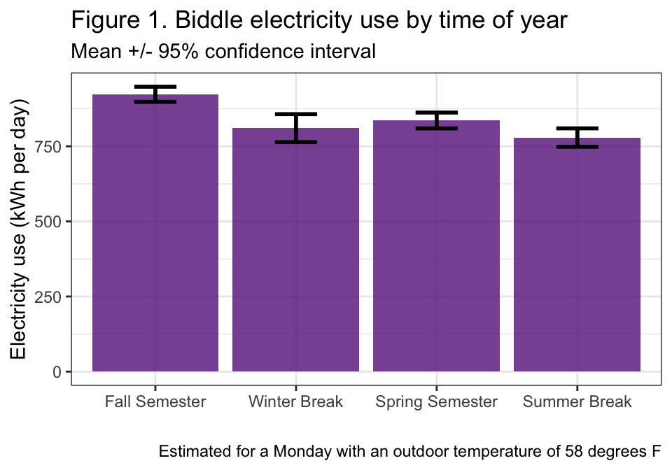
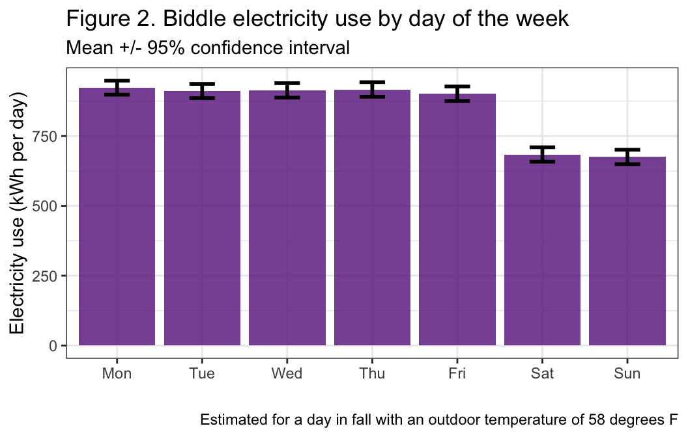
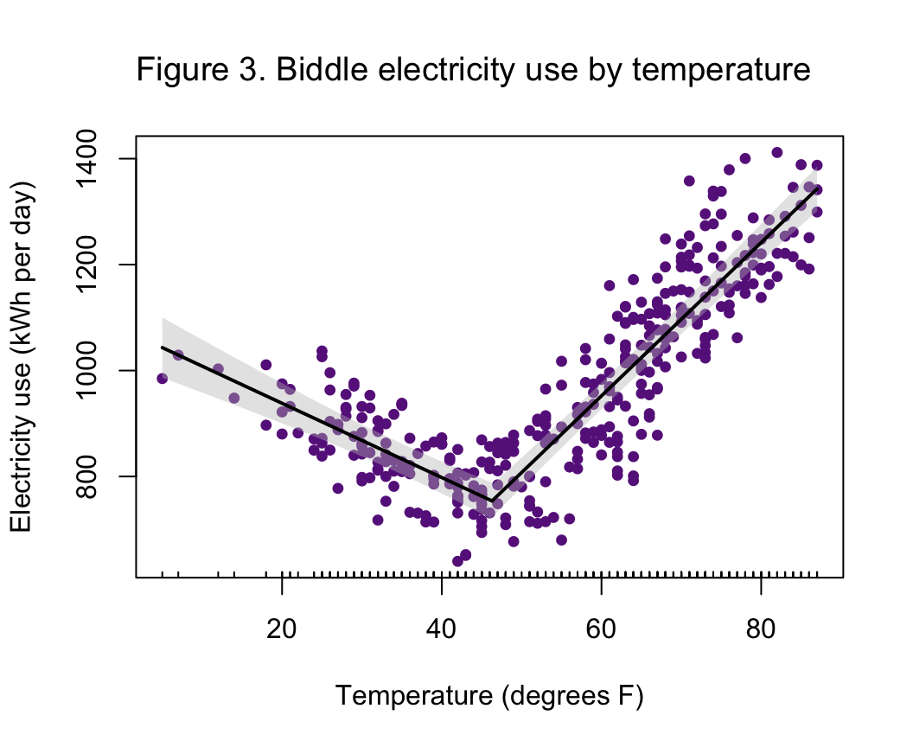

Photo from Dickinson College
| Version | Author | Date |
|---|---|---|
| c82b6b0 | maggiedouglas | 2026-08-15 |
Our stakeholders suggested we look at electricity use across Biddle Press Box, Restrooms, and Durden ATC (Biddle). Biddle used 190,898 kWh in the 2025 fiscal year, using 35% of electricity in our building category. Biddle accounts for 23% of square feet within the “other” category. Biddle’s estimated cost for electricity use was $15,536, and the buildings produced 57.4 metric tons of CO2 equivalent. This is a mixed-use athletic complex open to students and staff during the fall and spring semester, with less use over winter and summer break. Durden’s cooling systems are electric DX cooling and VAV units, and the building has gas heat and electric reheating (Mike Kiner, personal communication). The press box uses mini split electric heat pumps (Mike Kiner, personal communication). Across the fiscal year, Biddle used 12.0 kWh/sqft. In fall and summer, Biddle’s electricity use is above the EIA electricity intensity median for U.S. college and university buildings but is in line with the median during winter and spring (EIA, 2022).
We expect temperature and occupancy will have the most influence on electricity use. The relationship between temperature and kWh should create a V-shaped relationship, but the small amount of gas used to heat Durden will weaken the association at lower temperatures. For cooling, during colder seasons, fall and winter, the electricity usage should be lower, and higher in summer and spring. Fewer students using Durden in the summer should decrease the amount of electricity used in summer. We expect that electricity use on weekends will be significantly lower than on weekdays.
The outcomes of the model show significant effects of day (F6,352 = 72.9, P < 0.001), period (F3,352 = 12.0, P < 0.001), temperature below 46 deg F (F1,352 = 116.8, P < 0.001), and temperature above 46 deg F (F1,352 = 238.3, P < 0.001). The model was able to explain 83% of the variation in Biddle’s daily electricity use (R2 = 0.83).
The estimates from the fitted model suggest that after accounting for other factors, electricity use was 10% lower in the spring compared to the fall and 14% lower in the winter than fall. After accounting for temperature, electricity use was 18% lower in the summer than fall (Figure 1).

| Version | Author | Date |
|---|---|---|
| 705344f | maggiedouglas | 2026-07-09 |
Electricity use was similar on all weekdays, but was about 30% lower on the weekends compared to Mondays (Figure 2).

| Version | Author | Date |
|---|---|---|
| 705344f | maggiedouglas | 2026-07-09 |
The model showed a significant relationship between electricity and temperature both above and below 46 °F (Figure 3). When temperatures were below 46 °F, electricity use decreased by 7 kWh (+/- 1 kWh) per °F. When temperatures were above 46 °F, electricity use increased by 14 kWh (+/- 1 kWh) per °F.

| Version | Author | Date |
|---|---|---|
| 705344f | maggiedouglas | 2026-07-09 |
We were correct in assuming temperature would have a significant relationship with electricity, above and below the break point associated with the switch from heating to cooling. It is interesting that this break point was 46oF, well below the typical set point around 65oF. This could be related to the athletic activity in the building and/or passive solar through the windows generating significant heat. There was also construction that occurred in the building in winter of 2025 (personal communication, Celine Cunningham, 2026); how this influenced the overall electricity use pattern and relationship to temperature is unclear.
Time of year was also a significant factor in Biddle’s electricity use. Electricity use in summer decreased after accounting for temperature, meaning that there are additional factors influencing summer electricity. Considering that collegiate sports do not operate over summer break, a lack of occupancy and use could be the cause. Not only would that align with our initial expectations, but if use were a driving factor, then that would explain the weekday and weekend pattern. Saturday and Sunday showed a decrease in electricity use that can reasonably be attributed to training and game schedules; facilities are more likely to be used Monday-Friday.
Going forward, we think that it would be helpful to put the Biddle Press Box and Durden on separate meters. The current meter is unique from other individual meters as it is an aggregate of buildings, which causes the electricity use to be high. This also makes it difficult to pinpoint whether there is potentially excess use in Biddle or Durden. These buildings also have different HVAC systems, which is the most prominent factor affecting electricity usage (Quevedo et al., 2024). Submetering these buildings would allow for a greater understanding of where to focus future efforts. We also believe that it would be valuable to reanalyze these buildings in a more typical year, where electricity use is not potentially affected by construction, to see how strongly these patterns hold. However, since our model explained 83% of the variation in electricity use for the measured fiscal year, the use for these buildings cannot be written off as solely being caused by construction.
Energy Information Administration (EIA). (n.d.). CBECS Terminology. U.S. Energy Information Administration - EIA - Independent Statistics and Analysis. Retrieved May 6, 2026, from https://www.eia.gov/consumption/commercial/terminology.php
Energy Information Administration (EIA). (2022). 2018 Commercial Buildings Energy Consumption Survey (CBECS). https://www.eia.gov/consumption/commercial/
Quevedo, T. C., Geraldi, M. S., Melo, A. P., & Lamberts, R. (2024). Benchmarking energy consumption in universities: A review. Journal of Building Engineering, 82, 108185. https://doi.org/10.1016/j.jobe.2023.108185
Code was compiled from past problem sets as written by both partners. Ben and Kyrie both wrote code to prepare the data. Kyrie wrote code for checking the model’s fit and statistical results. Ben wrote code for the figures.
For the writing portion, Ben wrote the Results and also the last paragraph of the Recommendations. Kyrie wrote the Background, and also the first two paragraphs of the Recommendations. Both partners reviewed and revised the draft text.
No AI tools were used for any part of this report.
R version 4.6.0 (2026-04-24)
Platform: x86_64-apple-darwin20
Running under: macOS Ventura 13.7.8
Matrix products: default
BLAS: /Library/Frameworks/R.framework/Versions/4.6-x86_64/Resources/lib/libRblas.0.dylib
LAPACK: /Library/Frameworks/R.framework/Versions/4.6-x86_64/Resources/lib/libRlapack.dylib; LAPACK version 3.12.1
locale:
[1] en_US.UTF-8/en_US.UTF-8/en_US.UTF-8/C/en_US.UTF-8/en_US.UTF-8
time zone: America/New_York
tzcode source: internal
attached base packages:
[1] stats graphics grDevices utils datasets methods base
other attached packages:
[1] sandwich_3.1-1 lmtest_0.9-40 zoo_1.8-15 segmented_2.2-1
[5] nlme_3.1-169 MASS_7.3-65 car_3.1-5 carData_3.0-6
[9] tseries_0.10-61 lubridate_1.9.5 forcats_1.0.1 stringr_1.6.0
[13] dplyr_1.2.1 purrr_1.2.2 readr_2.2.0 tidyr_1.3.2
[17] tibble_3.3.1 ggplot2_4.0.3 tidyverse_2.0.0 workflowr_1.7.2
loaded via a namespace (and not attached):
[1] gtable_0.3.6 xfun_0.59 bslib_0.11.0 processx_3.9.0
[5] lattice_0.22-9 callr_3.7.6 tzdb_0.5.0 quadprog_1.5-8
[9] vctrs_0.7.3 tools_4.6.0 generics_0.1.4 curl_7.1.0
[13] xts_0.14.2 pkgconfig_2.0.3 RColorBrewer_1.1-3 S7_0.2.2
[17] lifecycle_1.0.5 compiler_4.6.0 farver_2.1.2 git2r_0.36.2
[21] getPass_0.2-4 httpuv_1.6.17 htmltools_0.5.9 sass_0.4.10
[25] yaml_2.3.12 Formula_1.2-5 later_1.4.8 pillar_1.11.1
[29] jquerylib_0.1.4 whisker_0.4.1 cachem_1.1.0 abind_1.4-8
[33] tidyselect_1.2.1 digest_0.6.39 stringi_1.8.7 labeling_0.4.3
[37] splines_4.6.0 rprojroot_2.1.1 fastmap_1.2.0 grid_4.6.0
[41] cli_3.6.6 magrittr_2.0.5 withr_3.0.3 scales_1.4.0
[45] promises_1.5.0 timechange_0.4.0 TTR_0.24.4 rmarkdown_2.31
[49] httr_1.4.8 quantmod_0.4.29 otel_0.2.0 hms_1.1.4
[53] evaluate_1.0.5 knitr_1.51 rlang_1.2.0 Rcpp_1.1.1-1.1
[57] glue_1.8.1 rstudioapi_0.19.0 jsonlite_2.0.0 R6_2.6.1
[61] fs_2.1.0